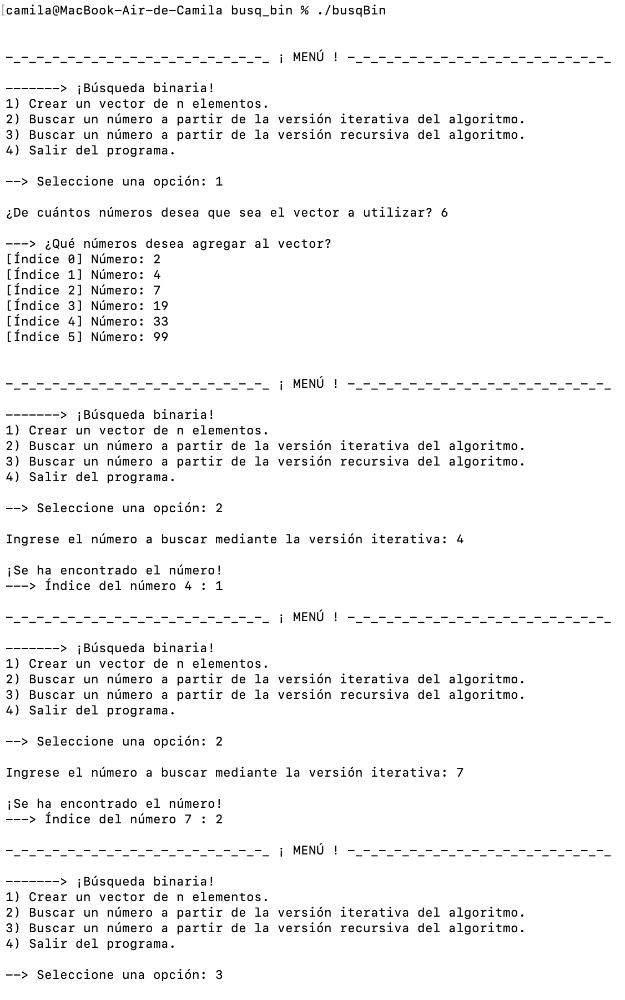
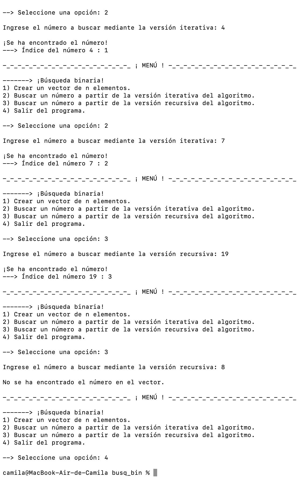
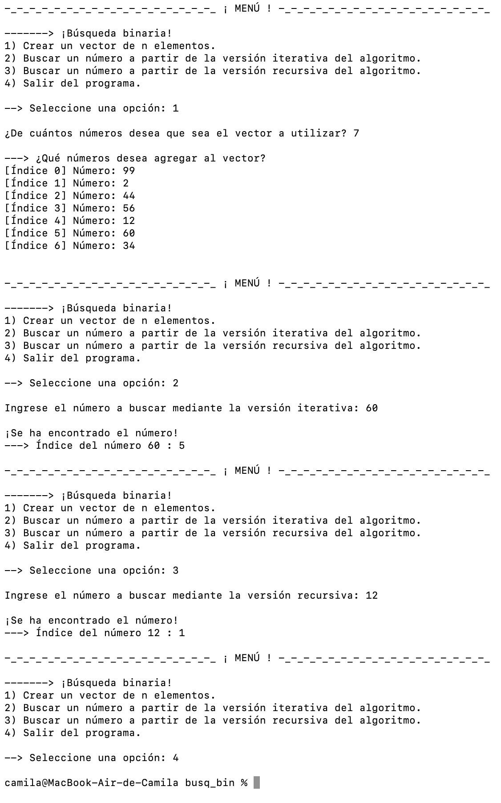

- Generated by
 1.16.1
1.16.1
|
Búsqueda Binaria (C++)
|
Ejecución del programa.
Las siguientes imágenes muestran la ejecución exitosa del programa correspondiente al algoritmo de Búsqueda Binaria, el cual tiene las funciones de...
El primer caso corresponde a un vector cuyos elementos fueron ingresados, en forma ascendente, por el usuario. A continuación, se muestra la ejecución del programa para este grafo.


El segundo caso corresponde a un vector cuyos elementos fueron ingresados, sin orden alguno, por el usuario. Para ello, se implementa la función sort() de la librería <algorithm>, de tal manera que los elementos del vector sean organizados en forma ascendente correctamente, lo cual sujeta a los elementos del vector a un cambio de índices. A continuación, se muestra la ejecución del programa para este grafo.
